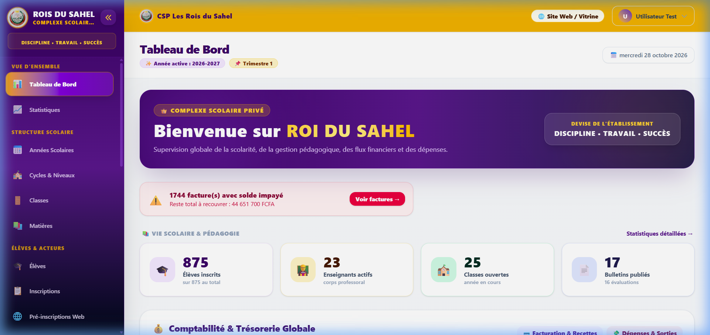
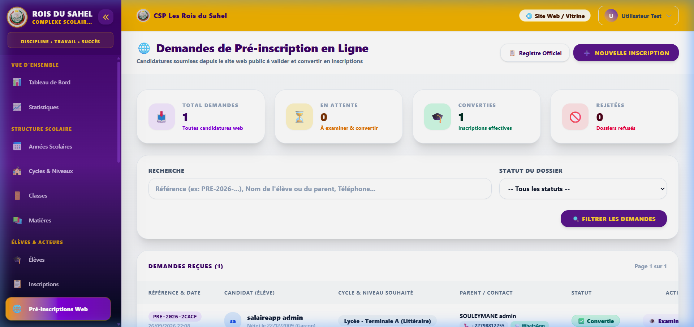
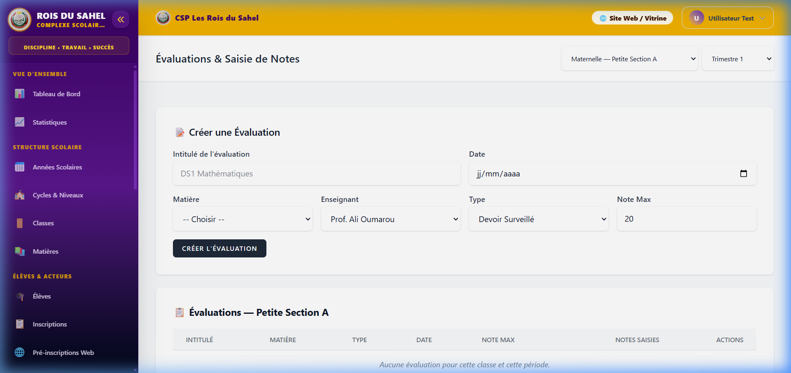
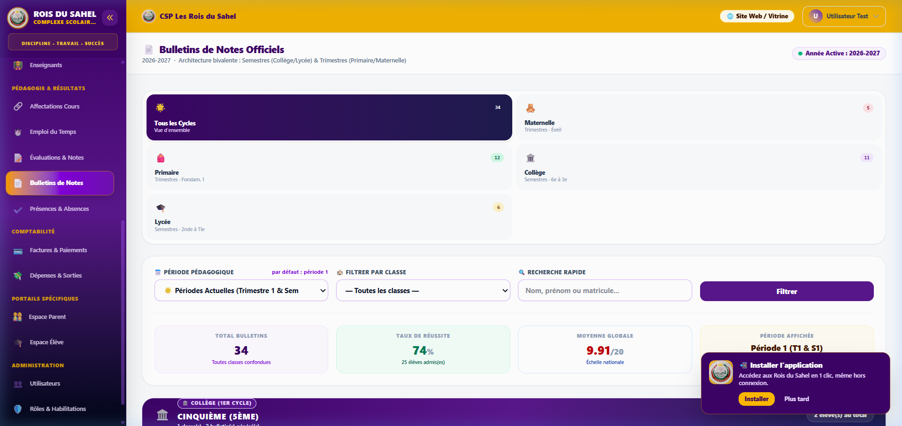
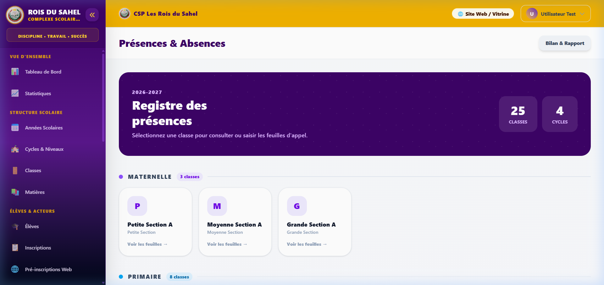
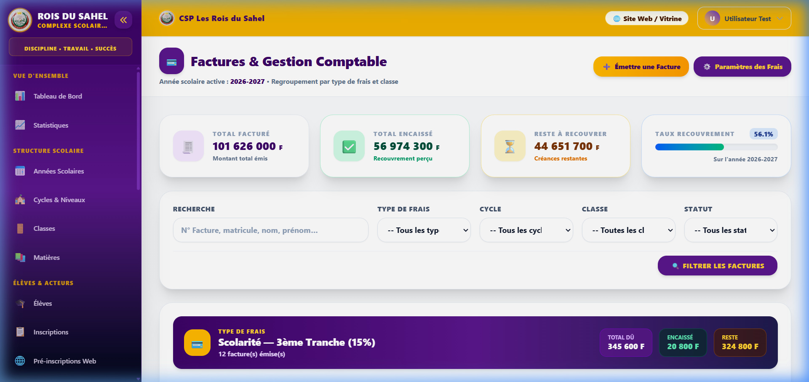
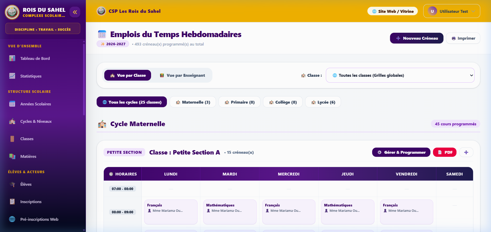
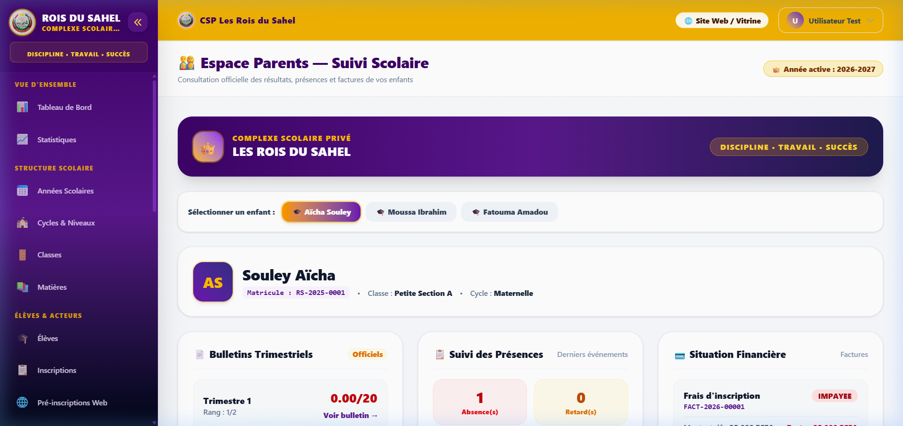

Modernisation administrative, suivi pédagogique rigoureux et portail d'information en temps réel au service de l'excellence scolaire.
Une démarche méthodique articulée autour de 5 axes fondamentaux :
Le constat de la gestion traditionnelle et les défis à relever
Ce que gagnent l'école, les enseignants et les parents
Direction, inscriptions, notes, bulletins par cycle, présences, finances
L'espace web des parents et la future application sur smartphone
Confidentialité stricte, synthèse avant/après et séance de questions-réponses
Répondre aux exigences contemporaines d'une école d'élite à Niamey.
« Comment offrir à notre établissement un outil unique, moderne et sécurisé, garantissant à la fois la rigueur administrative, la sérénité des enseignants et la transparence totale envers les parents d'élèves ? »
Le déploiement de la plateforme sur mesure du Complexe Scolaire Privé Les Rois du Sahel, accessible en tout temps et conforme aux normes officielles.
Une valeur ajoutée concrète pour chaque acteur de la communauté éducative :
Fin des doubles saisies et des corvées de classement. Les enseignants et l'administration se consacrent pleinement à la réussite pédagogique de l'enfant.
Efficacité OpérationnelleLes moyennes, rangs et états financiers sont calculés par le système sans risque d'omission. Tout est standardisé et conforme aux directives académiques.
Conformité AbsolueLes parents n'attendent plus la fin du trimestre dans l'angoisse : ils ont une visibilité régulière sur les efforts, les présences et les progrès de leurs enfants.
Partenariat École-FamilleUne vue panoramique en temps réel pour l'équipe de direction.

Simplification du recrutement et suivi administratif dès l'admission.

L'enseignant évalue, le système calcule et classe automatiquement.

Le respect scrupuleux des normes pédagogiques et ministérielles.

Suivi rigoureux de la ponctualité et de la discipline au quotidien.

Clarté absolue des règlements de scolarité pour les familles et l'école.

Optimisation de l'organisation pédagogique par classe et par cycle.

Un espace personnel et confidentiel pour chaque famille de l'établissement.

Une application pour smartphone déjà prévue afin de connecter les parents en continu.
Chaque acteur accède uniquement aux données qui le concernent, dans le respect de la vie privée des familles.
Accès exclusif et réservé aux enfants de la famille. Aucune donnée d'un autre élève n'est visible.
Cloisonnement TotalConsultation et saisie strictement limitées aux classes et matières attribuées par la direction.
Périmètre PédagogiqueSupervision générale, gestion des autorisations et audit sécurisé de l'ensemble de l'école.
Pilotage CentraliséUne mesure objective du saut qualitatif accompli par l'établissement :
| Domaine | Gestion Scolaire Traditionnelle | Plateforme « Les Rois du Sahel » |
|---|---|---|
| Calcul des Bulletins | Calculs manuels longs, risque d'erreurs de moyenne | ✅ Calcul instantané, automatisé et infaillible |
| Suivi des Absences | Signalement tardif en fin de mois par courrier | ✅ Pointage journalier et alertes immédiates |
| Frais de Scolarité | Reçus papier égarés, risque de malentendus | ✅ Suivi transparent du solde en temps réel |
| Accès aux Documents | Déplacement physique obligatoire à l'école | ✅ Téléchargement en ligne 24h/24 en 1 clic |
Un outil au service de la réussite de nos enfants, de la sérénité des parents et du rayonnement du Complexe Scolaire Les Rois du Sahel.